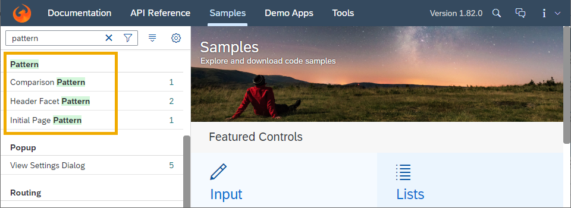

|
Consuming SAP Icon Font in a Non-UI5 Environment You can now consume the predefined |
|
Incompatible jQuery Security Fix We have added a jQuery security fix to SAPUI5, which may introduce incompatibilities to existing application or library code. For checking and, if required, fixing your applications and libraries, see SAP Note 2941170. This note also contains information on the security background. |
|
Special URL Prefixes in App Descriptor Inside the app descriptor, you can now use special URLs prefixed
with One common use case is the resolution of local annotation files.
By default the local annotation files are resolved relative to
the manifest. When using a Find more details about the usage of such URL prefixes and an example in the documentation. |
|
SAPUI5 OData V4 Model The new version of the SAPUI5 OData V4 model introduces the following features:
Restriction
Due to the limited feature scope of this
version of the SAPUI5 OData V4 model, check that all required features are in place
before developing applications. Double-check the detailed
documentation of the features, as certain parts of a feature may
be missing. While we aim to be compatible with existing
controls, some controls might not work due to small
incompatibilities compared to
For more information, see OData V4 Model, the API Reference, and the Samples in the Demo Kit. |
sap.f.GridContainerWe have enhanced the
keyboard handling capabilities of the Grid Container. You can
now navigate to the item below or above using the Down
Arrow and Up Arrow. If you reach any of the
borders of the Grid Container, the
You can now perform drag-and-drop operations using
Ctrl
Arrow Keys
simultaneously. If your Grid Container is configured for
drag and drop (has For more information, see the API Reference and the Sample. |
sap.m.ButtonVisualization of shortcut hints
on focus and hover is now available. For example,
Ctrl
S
is displayed for the Save button to help the user to
find the correct shortcut. This is done by adding a command to a
button. This new feature is available for the standalone
|
sap.m.DatePicker,
sap.m.DateTimePicker, and
sap.m.TimePickerWe have aligned the visualization of the full-screen dialog in mobile view for these controls. |
sap.m.MessageViewThe
grouping functionality in the |
sap.m.PlanningCalendar
For more information, see the API Reference and the Sample. |
|
To support better async validation in the applications, we have
introduced a |
|
|
|
The Show Details/Hide Details feature for toggling the visibility of hidden columns in the pop-in area has been enhanced for mobile phones. For more information, see the API Reference for the related method and the Sample. |
|
Key users can now define and delete favorites as well as define a
default view in the Manage Views
dialog.
These changes are stored in the
|
sap.ui.integration.widgets.Card
|
sap.ui.unified.CalendarWe
have added a new property to the |
sap.ui.unified.FileUploaderWe
have added a new |
|
Samples We have added a new Pattern category in the Samples section of the Demo Kit app. The samples added in this category aim to improve the representation of more complex scenarios, such as layouts and floorplans.  |